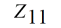
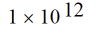
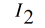
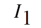
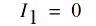
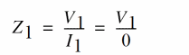
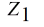
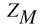
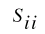

F
ADE Explorer Frequently Asked Questions
This document contains the frequently asked questions and answers related to ADE Explorer.
Why does Zij show large values sometimes?
This usually happens when a port in a component is open.
For example, consider a component where port 2 is open and shows a large value, such as 
As and are proportionally related, 
Now, , which can make reach infinity.
In such cases, you can use the equation for to plot input impedance:
Where R is the reference impedance of the port of interest, i is the port number, and are the S-parameters.
How to run more than 10 OCEAN sessions at once?
By default, you can run a maximum of 10 simultaneous OCEAN sessions. If you try running more, the following error is displayed in the CIW:
Failed to lock log file: <Logfilepath>/CDS.log.9
*WARNING* file <logfilepath>/CDS.log.9 File is already locked by some other process.
This is because the CDS_LOG_VERSION environment variable is set to sequential, limiting the maximum simultaneous runs to 10. With the default setting, log files such as CDS.log.1, CDS.log.2, and so on are created for each OCEAN session. For more information, see the Log File Environment Variables section in the Cadence Application Infrastructure User Guide.
To run more that 10 OCEAN sessions simultaneously:
-
Specify the log file name with the OCEAN command.
ocean -log logfileName file.ocn
-
Set the environment variable
CDS_LOG_VERSIONtopid.setenv CDS_LOG_VERSION pid
This will create log files with the process ID as the extension. Therefore, there is no restriction on the number of OCEAN sessions that can be run simultaneously.
How to get the list of output signals and expressions set using SKILL?
For an ADE L session, you can get the list of the outputs by using the
s=asiGetCurrentSession()
=>stdobj@0x1d14060
outs=asiGetOutputList(s)
=>(sevOutputStruct@0x15e71b8 sevOutputStruct@0x15e7208 sevOutputStruct@0x153ef48)
outs~>signal
=>("/out" "/net15" nil)
outs~>expression
=>(nil nil ymax(VT("/net15")))
For ADE XL, there is no direct SKILL function to get the list of outputs. However, you can write SKILL code to get a list of outputs defined for each test present in the current ADE XL session and return the signals or expressions listed for all the tests. Currently, the asiGetOutputList SKILL function does not list test names of the corresponding outputs.
To get a list of outputs for ADE XL:
-
Load the following procedure in the CIW:
procedure(CCSGetOutputList()
let((finalList sessId axlCv tests testId testSes)
sessId = axlGetWindowSession(hiGetCurrentWindow())
axlCv = axlGetMainSetupDB(sessId)
tests = axlGetTests(axlCv)
foreach(test cadr(tests)
testId = axlGetToolSession(sessId test)
testSes = asiGetSession(testId)
finalList = append(finalList asiGetOutputList(testSes))
)
finalList
) ;let
) ;procedure
-
Open the ADE XL view for the design you wish to find the output list and enter the following procedure in the CIW:
outs= CCSGetOutputList()
The following will return the output list structure:(sevOutputStruct@0x1a0e5098 sevOutputStruct@0x1a0e50a8 sevOutputStruct@0x1b506868)
outs~>signal =>("/out" "/net15" nil)
outs~>expression =>(nil nil ymax(VT("/net15")))
How to read and load design variables from a text file to ADE L window?
You can use the following procedure to load the design variables from a text file with .il extension, for example, loadVarFile.il:
procedure(CCSAddVarFmFile(fileName)
let((myPort myList myVar)
myPort = infile(fileName)
unless(myPort
error("\n File does not exist or is not accessible. Specify a valid filename")
) ;unless
while(gets(myVar myPort)
myVar = parseString(myVar)
myList = append(myList list(list(car(myVar) cadr(myVar))))
) ;while
asiSetDesignVarList(asiGetCurrentSession() myList)
close(myPort)
t
) ;let
) ;procedure
To read and load the design variables:
-
Load the above procedure from
.cdsinitfile or from the CIW using the following command:load "loadVarFile
Alternatively, you can directly put the procedure in.il".cdsinitfile or CIW to load the design variables. -
Create a file containing the design variable names and their values defined in the following format:
CAP 100p
Res 310k
x 4.0
z 4f
-
Load the design variable file from the CIW using the following command:
CCSAddVarFmFile("./designVarList.txt")
Before executing the above command, ensure that the ADE session is open in the active window because the procedure uses the asiGetCurrentSession() function.
Why does the RTT assistant not evaluate expressions if the output format is set to SST2?
This is a known issue and currently no solution is provided for this.
To use the RTT assistant, you can set the output format to psf, psfxl, psf with floats or fsdb.
Why do the schematic annotations not get updated automatically when a new simulation is run?
The solution is to annotate the operating points through the Results tab to refresh the directory path in the Annotation Setup form. To do this right-click a result name and select Annotate. You can then choose what to display.
Return to top